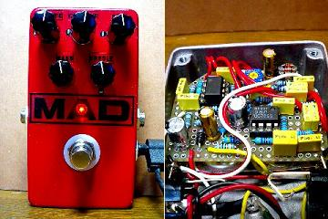
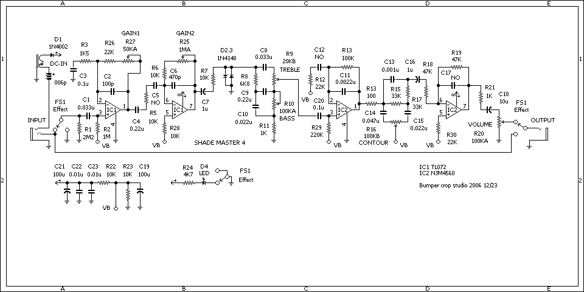
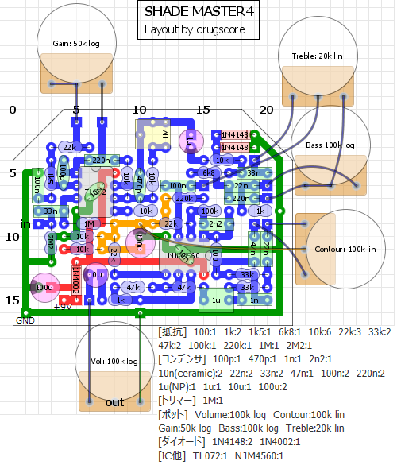
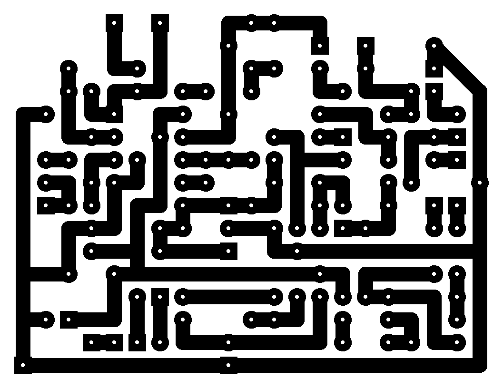

Bumper crop studio SHADE MASTER 4
2009年04月05日 カテゴリー：自作エフェクター（アナログ）

使わなくなっていたFuzz Factoryを分解して作りました。5ノブといえばShred Masterかなぁと。Bumper crop studioというサイトにいろいろとモディファイが載っていて、その中からShade Master 4を作ることにしました。
▽回路図（入手できなくなったようなのでアップしておきます。2016年11月）

▽レイアウト

▽PCB（横55.9mm縦43.2mm）

GAIN2というポットもあるんですがトリマーにしときました。ICソケットの下に0.01μFの積層セラミックコンデンサを入れるという荒業（というほどではないけど）をしています。使うICソケットやコンデンサによっては入らないかもしれませんがご容赦を。
製作してテストしていて何か変な音だなぁと思ったら、レイアウトが間違っているところがありました（公開しているものは修正済み）。最近は一発で鳴ることが多かったので油断していました。気をつけなければいけません。MXRサイズでは配線が込み合ってるので発振するかと思いましたが、通常使う範囲では大丈夫みたいです。
クリッピングダイオードは普通どおり1N4148の対称にしました。やはりかなりの歪みです。ノブは多いですがトーンコントロールしやすいのであまり煩わしさはありません。意外と浅めの歪みでも良い感じなので、持っていて損はないエフェクターでしょう。
（2016年11月9日回路図追加）